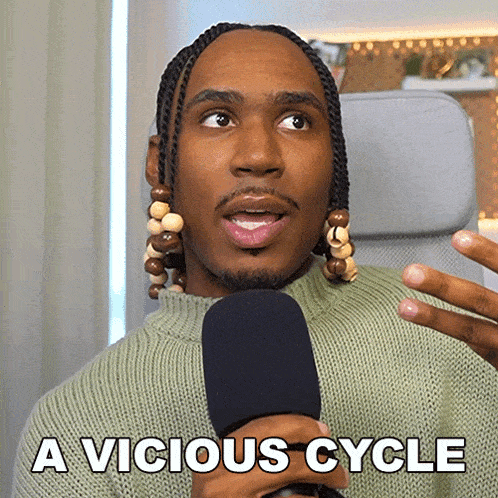

We Set Managers Up to Fail
Promoting your best performer is an easy decision. Preparing them to lead? That’s a whole other story.
There is a ritual that plays out in companies every day, so common it barely registers as a decision anymore. Someone is very good at their job - really good, maybe the best on the team. So naturally they get promoted to manage everyone else who does that job. The ceremony takes about fifteen minutes. A new title. Maybe a modest salary bump.
And then they are left entirely alone to figure out what managing people actually means.
We call this a promotion. But from where we stand? It usually amounts to abandonment.
The logic feels airtight on the surface: this person knows the work better than anyone, so it should make sense that they should lead the team doing it. But this conflates two completely different skill sets: being excellent at a craft, and being excellent at helping other people be excellent at that craft.
Those aren't the same thing.
We promote people for what they've done, then expect them to succeed at something they've never been asked to do, and never been taught.
The Skills That Got Them Here Won't Get Them There
Think about what made someone a standout individual contributor. Maybe it’s their ability to focus deeply on a topic, or they have exceptional personal accountability. Or maybe they excel at executing with minimal direction, or are comfortable sitting with ambiguity and solving problems independently. These are genuinely valuable qualities. They are also, in many cases, exactly the wrong defaults for management.
Because great managers don't always do the work. A manager’s role is to create the conditions for others to do the work, and to be successful at it. They ask questions instead of supplying answers. They sit with someone else's struggle rather than jumping in to fix it. They have conversations that are uncomfortable, repetitive, and slow. They absorb frustration without passing it down. They give feedback that lands without crushing, and praise that motivates without inflating.
None of this comes naturally just because you can write clean code, close a sale, or draft a brilliant strategy. And yet we act surprised when the transition is rocky.
The Invisible Job Description
Here's what makes this transition especially unfair: the expectations are never really stated. A new manager often doesn't know what they're supposed to do differently on Monday morning. How are they supposed to manage performance or lead one-on-ones? What’s their role in building team culture? How do they deal with conflict between two team members?
No one has ever shown them how.
They inherit a team, a set of meetings … and they're expected to sort out the rest on their own. Most do so by copying the managers they've had in the past, for better or worse. Some figure it out through painful trial and error. A few have enough natural emotional intelligence that they muddle through. But many struggle, knowing they're not doing it well, unsure what "doing it well" would even look like.
Meanwhile, the people they manage are the ones who pay for the learning curve. Team members get inconsistent feedback, unclear expectations, and a manager who is overwhelmed but may not be aware of it (or is unwilling to admit it). High performers start looking elsewhere. The new manager gets blamed for "leadership issues" that are actually just the predictable result of a system that offers almost no support.

Individual Excellence Is a Trap
There's a particular irony in how this system works. The more exceptional you are at your individual job, the more pressure there is to take the management path. In most organizations, management is still the primary route to influence, seniority, and higher compensation. So the best engineers, salespeople, writers, and analysts get channeled into roles that require entirely different skills, and the technical talent that made them exceptional gets sidelined.
Many will privately say that they miss the work. That they feel less competent now than they did before. That they spend their days in meetings, dealing with interpersonal dynamics and administrative tasks, and they're not sure they're making anything better.
Greatness at a craft rarely transfers to greatness at nurturing a craft in others. That's not a flaw - it's just a different discipline entirely.
What Actually Needs to Change
Fixing this isn't complicated in theory, even if it requires real organizational will. A few things that actually matter:
- Define what good management looks like for your organization
- Train your people before you promote them, and keep checking in with them afterwards
- Provide access to a peer group of other new managers, a mentor or coach
- Make sure they know they can ask for help
The stakes here are not abstract. The quality of someone's manager is one of the most powerful predictors of whether they stay or leave, whether they grow or stagnate, whether they feel seen or invisible. We've spent decades studying employee engagement and trying to understand why it's so difficult to move the needle, and the answer, again and again, is that most people's experience of work is mediated almost entirely by the person directly above them.
Good management is a skill. Like any skill, it can be taught, practiced, and developed over time, but only if we treat it that way.